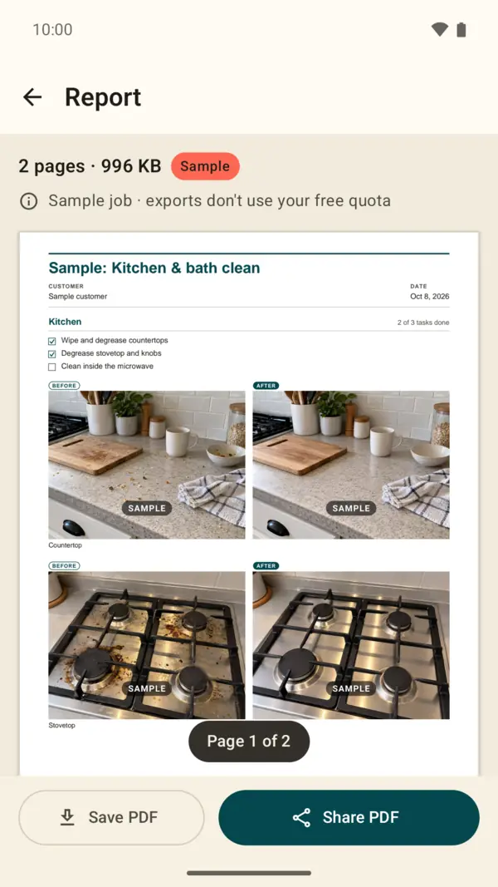
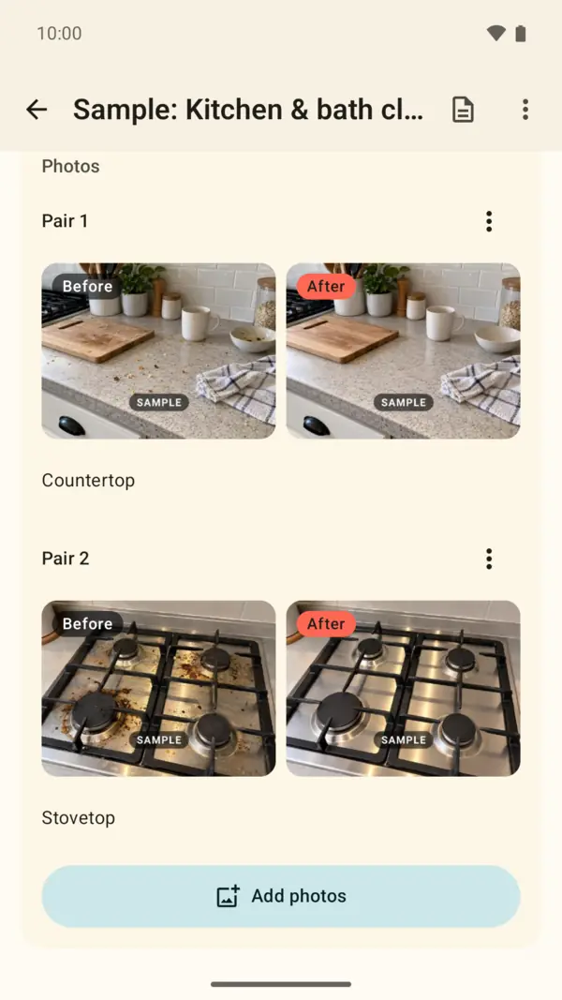
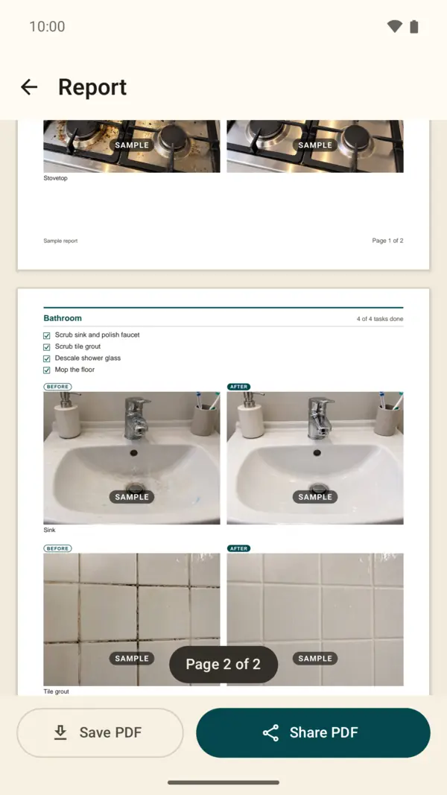

Cleaning reports with before & after photos, as one PDF
Tidyslip turns a finished cleaning job into a clean PDF your client can open anywhere: before and after photos, the tasks you completed and your notes, room by room.
Join the free Android betaTwo steps: join the tester group with your Google account, then tap Become a tester and install from Google Play. Please don’t buy Pro during the beta (it’s a real charge). Testers are asked to open the app a few times over 14 days. Feedback: turkoglua0@gmail.com.
- Android
- Works offline
- No account
- No ads

Three steps after every cleaning job
-
Add before and after photos
Pick them from your phone’s gallery. Each pair sits side by side, and the photos are copied into the app, so the report keeps working even if you delete the originals later.
-
Tick off the cleaning checklist
A short task list for each room: kitchen, bathroom, office, or whatever you name it.
-
Share the PDF report
Preview the real pages, then send the report by email or any messaging app, or save it to a folder you choose.

Built for house cleaners and small cleaning businesses
Everything you need to show a client what was done, and nothing you have to sign up for.
Jobs that save as you type
Create, edit and delete cleaning jobs. Add an optional customer name and notes.
Room sections
Keep each room’s checklist and photos together, in the order you work.
Cleaning checklists
A simple list of the tasks you completed in each room, ticked off as you go.
Before and after photo pairs
Reorder pairs, swap before and after, and add a short caption.
Multi-page PDF report
Job title, date, customer, notes, checklists and photos. Long jobs continue on extra pages without cutting photos in half.
Preview before you send
See the actual PDF pages first, then share or save the report.
Share or save
Send the PDF with any app on your phone, or save it to a folder you choose.
Backup and restore
Save all jobs and original photos to one zip file and restore them on the same or a new phone.
Sample job
Open a ready-made example to see a full report before you start your own.
See what your client gets
Every report is a real, multi-page PDF that opens on any phone or computer. Each room gets its own section with a task count, the checklist and the before and after photos, so your client can see the whole job at a glance.
This page comes from the built-in sample job. Its photos are illustrative and marked “Sample”.

Works offline. Your jobs stay on your phone.
Tidyslip works without an internet connection and without signing up. Customer details and photos stay on your device unless you share a report or a backup yourself. There are no ads.
Buying or restoring Pro needs an internet connection. Read the privacy policy
3 free reports, then a one-time upgrade
- Your first 3 report exports are free. Sharing the same unchanged report again doesn’t use another one.
- The sample job’s report never uses your free exports.
- Tidyslip Pro unlocks unlimited report exports with a one-time purchase. No subscription. The price for your country is shown in Google Play and in the app before you buy.
- Previewing reports, editing your jobs and backing up your data always stay free.
Questions about the cleaning report app
Can I make a cleaning report PDF without an account?
Yes. There is no sign-up. Pro is tied to your Google Play account, and you can restore it with “Restore purchases”.
Does it work without internet?
Yes, for creating jobs, previewing and exporting reports. Buying or restoring Pro needs a connection.
Can I use before and after photos I already took?
Yes. Tidyslip adds photos from your phone’s gallery and pairs them side by side.
Is there an iPhone version?
Not at the moment. Tidyslip is available for Android. Your clients can open the PDF reports on any phone or computer.
Are the dates and photos in the report verified?
No. A Tidyslip report is a simple record you create and share. Dates and photos come from you and your phone. They are not independently verified or certified.
How do I move my cleaning jobs to a new phone?
Use “Back up all jobs” in Settings to save a zip file, then “Restore from backup” on the new phone.